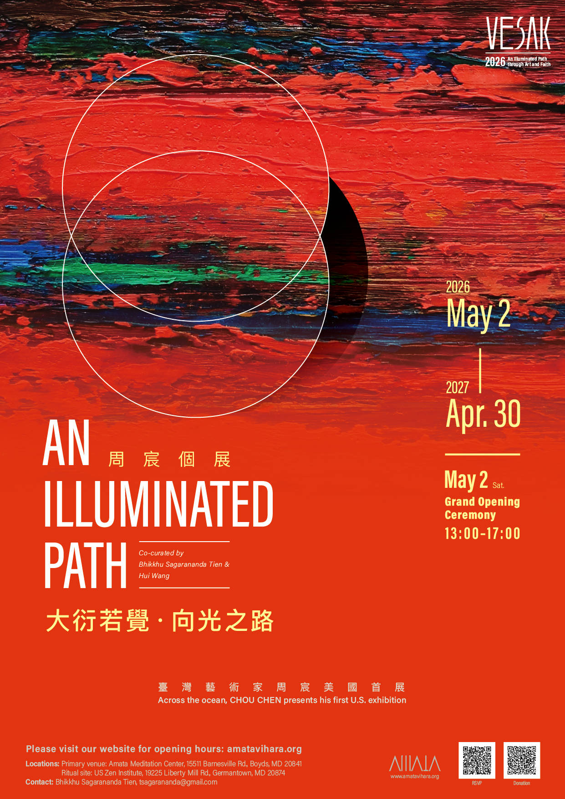

醍醐寺誠摯邀請您於五月參與這場結合衛塞節慶典、藝術展覽與跨宗教交流的特別聚會。
時間：2026 年 5 月 2 日 – 5 月 16 日
地點：醍醐寺，Boyds, MD
展覽：
《光明之道》— 周宸個展
重點活動
這是一個透過藝術與修行，共同體驗反思與連結的空間。
RSVP 報名：https://shorturl.at/rt7Fc
更多資訊：amatavihara.org
期待與您相見。
願此光明之道帶來清淨與和平和。
